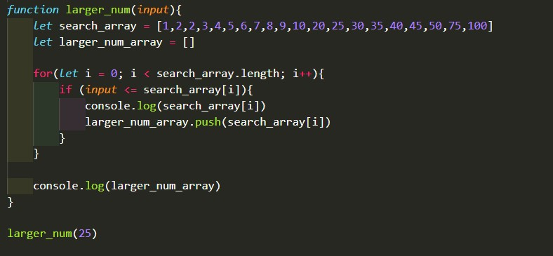
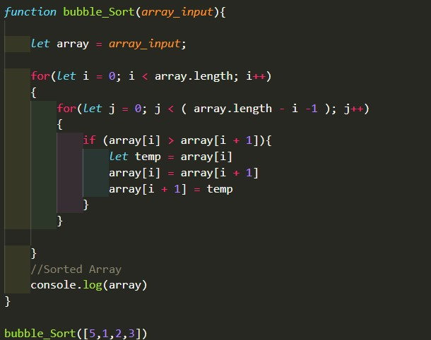

Notes:
- Javascript has number data types like Python (string, bool, int, float, etc.)
- Javascript for loops are different than python. Example: for([start point]; [condition] ; [increment] ...
- Javascript Functions can be written in three ways: Stored in variable, normal function contruction, and the arrow function
Questions:
Should all Javascript code we write be contained in functions? I know some languages require it.
Exercises:
The screenshot down below is the function I made for one of the Javascript Exercises. In the function below, we check an array to see the values in the array that are larger than a given input. If you would like to play around with the function, go under the folder week2, then under the js folder, then click on the week2 Javascript file.
The screenshot down below is the function I made for one of the Javascript Exercises. In the function below, we sort an array using a bubble sort. We are sorting from lowest to highest. If you would like to play around with the function, go under the folder week2, then under the js folder, then click on the week2 Javascript file.
